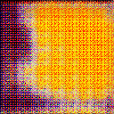
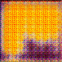
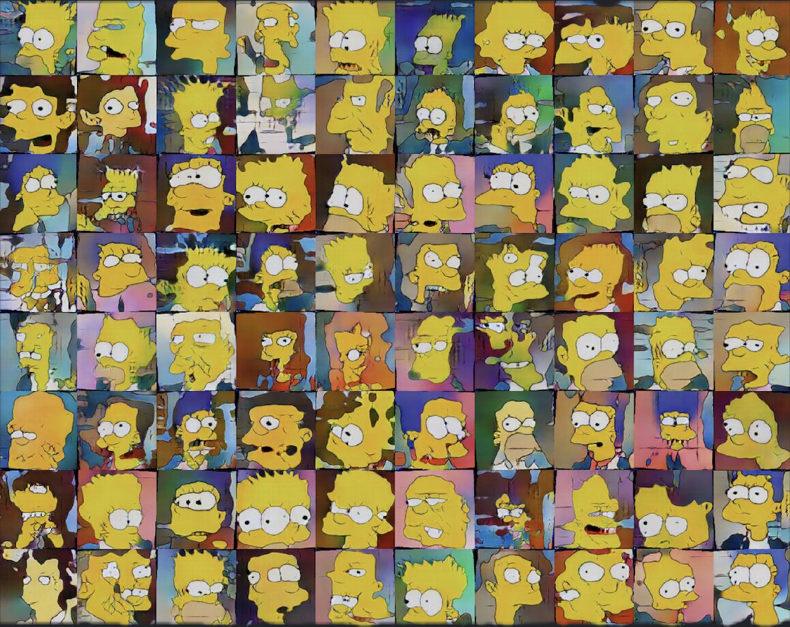

Generating Simpsons Faces
Even a simple GAN can produce surprisingly cool results. By training a generative adversarial network on Simpsons faces, we can generate new characters that resemble the originals, demonstrating the power of GANs in computer vision.
The GAN Model
Here’s the simple GAN setup:
import torch.nn as nn
class Reshape(nn.Module):
"""A custom reshape layer."""
def __init__(self, shape):
super(Reshape, self).__init__()
self.shape = shape
def forward(self, x):
return x.view(*self.shape)class Generator(nn.Module):
def __init__(self, Z):
super().__init__()
self.Z = Z
self.gen_model = nn.Sequential(
nn.Linear(Z, 1024*8*8),
nn.BatchNorm1d(1024*8*8),
nn.LeakyReLU(0.2),
Reshape((-1, 1024, 8, 8)),
*self._make_deconv_blocks(),
nn.Conv2d(64, 3, 5, 1, 1),
nn.Tanh()
)
def _make_deconv_blocks(self):
channels = [1024, 512, 256, 128, 64]
kernels = [5, 5, 5, 5]
strides = [2, 2, 2, 2]
paddings = [1, 2, 2, 2]
output_pads = [0, 0, 0, 1]
blocks = []
for i in range(4):
blocks += [
nn.ConvTranspose2d(channels[i], channels[i+1], kernels[i], strides[i], paddings[i], output_pads[i]),
nn.BatchNorm2d(channels[i+1]),
nn.LeakyReLU(0.2)
]
return blocks
def forward(self, noise):
return self.gen_model(noise)class Discriminator(nn.Module):
def __init__(self):
super().__init__()
channels = [3, 64, 128, 256, 512, 1024]
conv_params = [(5, 2, 1), (5, 2, 1), (5, 2, 1), (5, 1, 2), (5, 2, 2)]
conv_blocks = []
for i in range(5):
k, s, p = conv_params[i]
conv_blocks += [
nn.Conv2d(channels[i], channels[i+1], k, s, p),
nn.BatchNorm2d(channels[i+1]),
nn.LeakyReLU(0.2)
]
self.model = nn.Sequential(
*conv_blocks,
nn.Flatten(),
nn.Linear(1024*8*8, 1),
nn.Sigmoid()
)
def forward(self, x):
return self.model(x)Generator Outputs During Training
Even early in training, the generator can produce recognizable characters like Bart and Marge:


A Variety of Generated Faces
After training, the GAN can create a variety of Simpsons-style characters:
